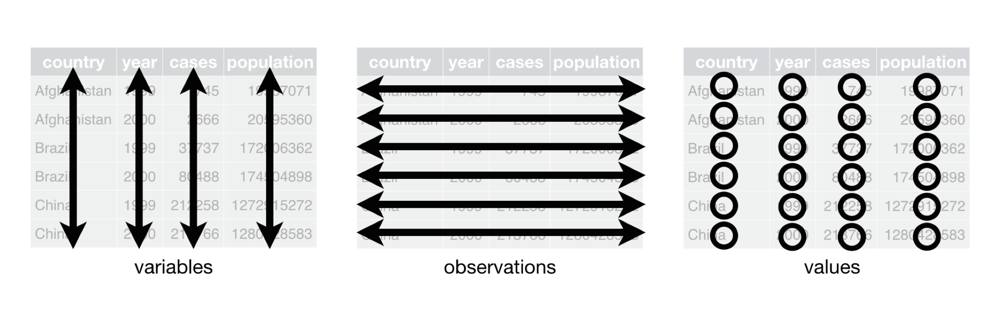
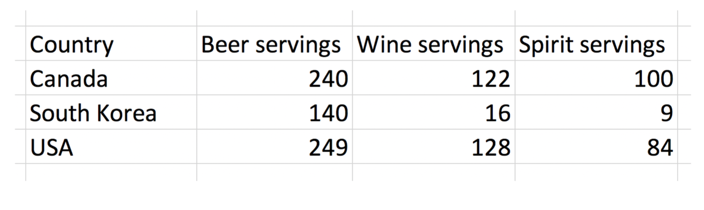
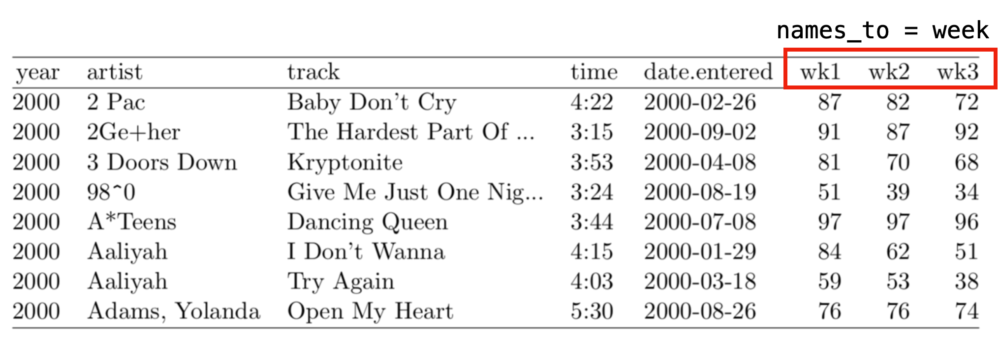

# A tibble: 317 × 79
artist track date.ent…¹ wk1 wk2 wk3 wk4 wk5 wk6 wk7 wk8 wk9
<chr> <chr> <date> <dbl> <dbl> <dbl> <dbl> <dbl> <dbl> <dbl> <dbl> <dbl>
1 2 Pac Baby… 2000-02-26 87 82 72 77 87 94 99 NA NA
2 2Ge+h… The … 2000-09-02 91 87 92 NA NA NA NA NA NA
3 3 Doo… Kryp… 2000-04-08 81 70 68 67 66 57 54 53 51
4 3 Doo… Loser 2000-10-21 76 76 72 69 67 65 55 59 62
5 504 B… Wobb… 2000-04-15 57 34 25 17 17 31 36 49 53
6 98^0 Give… 2000-08-19 51 39 34 26 26 19 2 2 3
7 A*Tee… Danc… 2000-07-08 97 97 96 95 100 NA NA NA NA
8 Aaliy… I Do… 2000-01-29 84 62 51 41 38 35 35 38 38
9 Aaliy… Try … 2000-03-18 59 53 38 28 21 18 16 14 12
10 Adams… Open… 2000-08-26 76 76 74 69 68 67 61 58 57
# … with 307 more rows, 67 more variables: wk10 <dbl>, wk11 <dbl>, wk12 <dbl>,
# wk13 <dbl>, wk14 <dbl>, wk15 <dbl>, wk16 <dbl>, wk17 <dbl>, wk18 <dbl>,
# wk19 <dbl>, wk20 <dbl>, wk21 <dbl>, wk22 <dbl>, wk23 <dbl>, wk24 <dbl>,
# wk25 <dbl>, wk26 <dbl>, wk27 <dbl>, wk28 <dbl>, wk29 <dbl>, wk30 <dbl>,
# wk31 <dbl>, wk32 <dbl>, wk33 <dbl>, wk34 <dbl>, wk35 <dbl>, wk36 <dbl>,
# wk37 <dbl>, wk38 <dbl>, wk39 <dbl>, wk40 <dbl>, wk41 <dbl>, wk42 <dbl>,
# wk43 <dbl>, wk44 <dbl>, wk45 <dbl>, wk46 <dbl>, wk47 <dbl>, wk48 <dbl>, …Tidy Data
SPS 502
What is tidy data?
Clean perfect data?
What is a dataset?
A dataset is a collection of values, usually either numbers (if quantitative) or strings AKA text data (if qualitative/categorical). Values are organised in two ways. Every value belongs to a variable and an observation. A variable contains all values that measure the same underlying attribute (like height, temperature, duration) across units. An observation contains all values measured on the same unit (like a person, or a day, or a city) across attributes.
What is “tidy” data?
“Tidy” data is a standard way of mapping the meaning of a dataset to its structure. A dataset is messy or tidy depending on how rows, columns and tables are matched up with observations, variables and types.
What is “tidy” data?

- Each variable forms a column
- Each observation forms a row
- Each type of observational unit forms a table
Untidy: Column headers are values

Tidy

Wide vs. Long Data
Case study: Billboard ranking data
How do we tidy data?
We use the
pivot_longerfunction from thetidyrpackageThree arguments:
- names_to,
- values_to,
- the column(s) we do or do not want to tidy
Additional arguments may be necessary in some cases
names_to
- the name of the column/variable in the new “tidy” frame containing the column names of the original data frame we want to tidy
names_to

values_to
- the name of the column/variable in the “tidy” frame containing the rows and columns of values in the original data frame we want to tidy
values_to

Columns we do, or do not, want to tidy
- want ( c(var1, var2, var3))
- or do not want (-var1, -var2)
Columns we do, or do not, want to tidy

Tidy Billboard Rankings
billboard_tidy <- billboard %>%
pivot_longer(
names_to = "week",
values_to = "rank",
wk1:wk76,
values_drop_na = TRUE
)
billboard_tidy# A tibble: 5,307 × 5
artist track date.entered week rank
<chr> <chr> <date> <chr> <dbl>
1 2 Pac Baby Don't Cry (Keep... 2000-02-26 wk1 87
2 2 Pac Baby Don't Cry (Keep... 2000-02-26 wk2 82
3 2 Pac Baby Don't Cry (Keep... 2000-02-26 wk3 72
4 2 Pac Baby Don't Cry (Keep... 2000-02-26 wk4 77
5 2 Pac Baby Don't Cry (Keep... 2000-02-26 wk5 87
6 2 Pac Baby Don't Cry (Keep... 2000-02-26 wk6 94
7 2 Pac Baby Don't Cry (Keep... 2000-02-26 wk7 99
8 2Ge+her The Hardest Part Of ... 2000-09-02 wk1 91
9 2Ge+her The Hardest Part Of ... 2000-09-02 wk2 87
10 2Ge+her The Hardest Part Of ... 2000-09-02 wk3 92
# … with 5,297 more rows